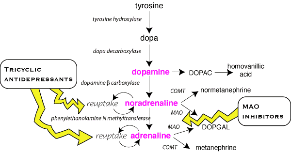

There are five potential stages at which drugs can act: synthesis of noradrenaline, storage, release from vesicles, receptor binding and re-uptake for recycling. (monoamines in the CNS diagram)

There are several experimental drugs used to interfere with synthesis, resulting in false transmitters (methyl dopa, 6 hydroxydopamine) but these are not used clinically.
One drug which interferes with storage is used in NZ: reserpine blocks uptake into vesicles causes NA depletion.It is used for its CNS effects to "calm" horses.
A number of drugs interfere with noradrenaline release, such as guanethidine, bretylium and calcium channel blockers, but none are used cliniclly for this effect alone. Some drugs act indirectly as sympathomimetics. Most get into the presynaptic cell by uptake 1 then displace noradrenaline from its vesicles with the end result that more noradrenaline is released. Peripherally acting drugs are used as vasoconstrictors (methoxamine), centrally acting drugs are widely abused (amphetamines, cocaine) and should not be used in veterinary practice.
Most of the drugs acting on adrenergic transmission interact with receptors (table). Some examples in clinical use include: heart failure - adrenaline & ?1 agonists, anaphylactic reactions - adrenaline, delaying parturition - clenbuterol, sedation and analgesia - xylazine and α2 agonists. Most drugs are specific for one receptor rather than one tissue (although some will not cross the blood brain barrier) so the range of side effects is wide.
Drugs which block uptake 1 (eg, amitriptylline) and MAO inhibitors are important in human medicine (as antidepressants etc.) but are less important in animals.
The individual drugs are covered in the notes on the main system they affect, usually the cardiovascular system.